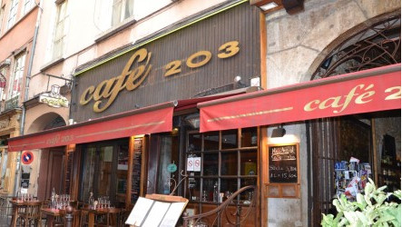
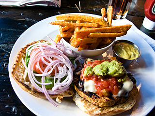

After Party
UPDATE: The party venue has changed. We're now going to the Ayers Rock Boat. New address is 21 Quai Victor Augagneur 69003 Lyon. Best way not to get lost: check the map.
A great conference deserves a great party, so after the last talk on the 19th we will adjourn to Café 203 to drink, dine, and unwind. It's an appetite-enhancing 20 minute walk or a short Métro ride from the Comédie Odéon to Café 203, a comfortable place to fill your stomach and enjoy some conversation with your fellow Rubyists.

RuLu will cover your first drink, and you can order appetizers or an entire meal if you wish.
Les Burgers
Hamburgers are quite popular in France, and with Lyon's gastronomic tradition there are some really amazing burgers to be found. Some consider the burgers at Café 203 to be the best in Lyon, though you can order more traditional food if you like.

Routes.rb
There will be at least two groups going to the after party, one walking and one taking the Metro. Choose a group and follow the leader. If you want to be more independent, use your map app of choice to find 9 rue du Garet, 69001 Lyon or look at this map.
See you there!
Ruby Lugdunum (aka RuLu) is a two-day conference dedicated to exploring the Ruby language and basking in warmth of the amazing Ruby community.
RuLu 2014 takes place in Lyon, France on June 19th and 20th. Have a look at the talks, read the blog and get your ticket!